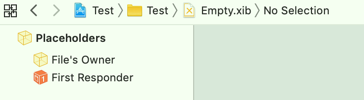
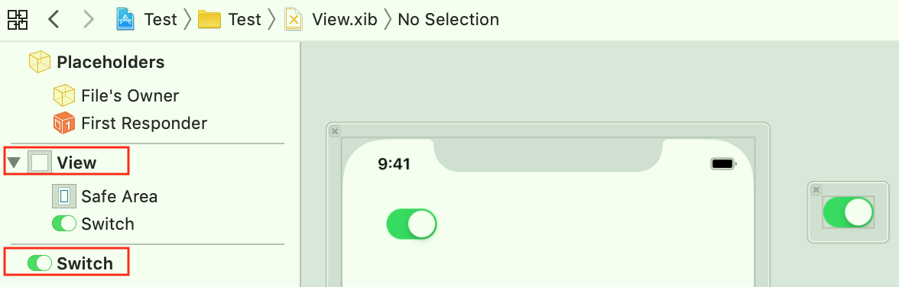
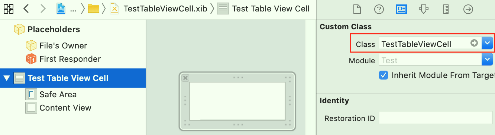
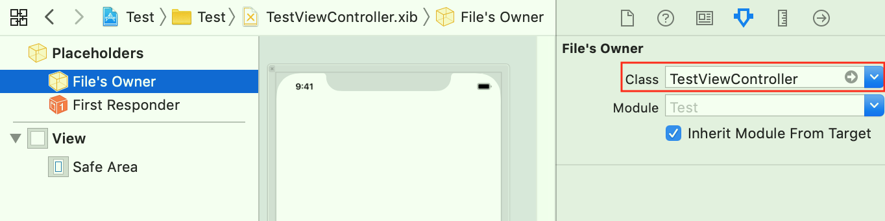
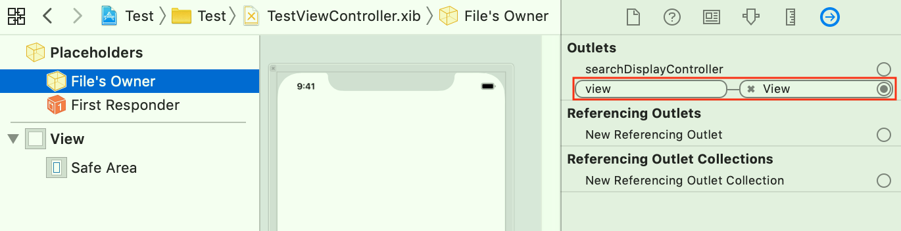
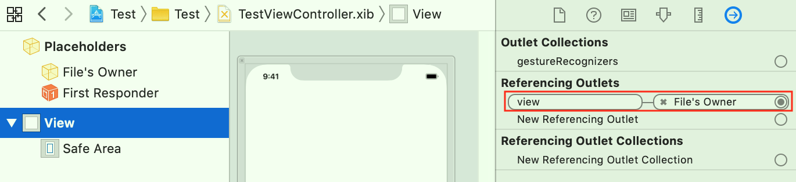
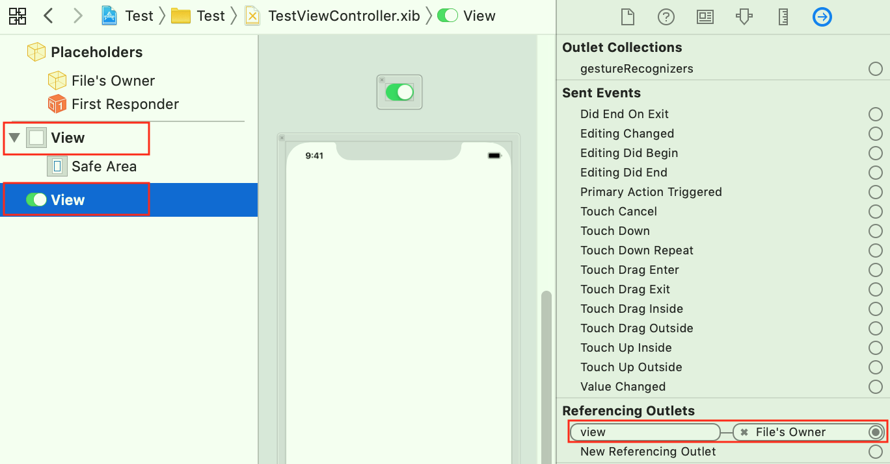
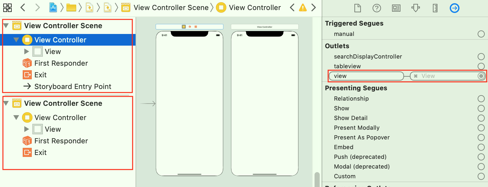

一、概述
-
1、Interface Builder工具
- 可以用来使用鼠标以图形化的方式，拖拉创建界面；
- Xcode 4.0前，是一个独立的软件，Xcode 4.0开始，重新设计，被直接集成到Xcode中；
-
2、NIB、XIB区别
- Xcode 3.0前，Interface Builder创建的文件是NIB（二进制格式，NeXT Interface Builder），不利于版本控制；
- Xcode 3.0开始，Interface Builder使用了一种新的文件格式XIB（XML文本格式，OS X Interface Builder或XML Interface Builder）；XIB在工程编译时被转换成NIB；
-
3、XIB
- XIB是一个描述文件，包含了用户界面及相关元素；
- 一个XIB文件对应一个ViewController，也可以通过使用XIB来自定义View；
-
4、StoryBoard
- iOS 5开始，Apple提供了一种全新的方式StoryBoard，来拖拉创建界面；
- StoryBoard是一组ViewController对应的XIB，以及它们之间的转换方式的集合； 在StoryBoard中，不仅可以看到每个ViewController的布局样式，也可以知道各个ViewController之间的转换关系；
二、加载XIB、SB
-
1、XIB文件的下面这些配置，决定
从哪里如何加载XIB中的视图；- a. XIB文件名；
- b. XIB文件的
File’s Owner的Class（默认为NSObject类型）； - c. XIB文件的
File’s Owner中的Outlet指向； - d. XIB文件的
视图（View）的Custom Class（默认为UIView类型）； - e. XIB文件的
视图（View）中的Outlet指向；
-
2、XIB有
File's Owner（必有）、View（可以没有但没有意义；可以有多个顶层view）、Object（可以没有，可以有多个）；File's Owner、View、Object都可以连线，关联属性、事件；- Object一般是继承于NSObject的逻辑类，用于处理视图中的逻辑部分；其分为两种：
-
a.
常规Object：在XIB、SB解档的时候直接创建，如添加的Gesture Recognizer； -
b.
External Object：在XIB、SB初始化时，传入已存在的对象，不由XIB、SB创建；// External Object的使用（需要配置其`Class`、`Identifier`） class TestHelper { @IBOutlet weak var sendBtn: UIButton! @IBOutlet weak var iconView: UIImageView! } let testHelper = TestHelper() let options = [UINib.OptionsKey.externalObjects: ["testHelperID": testHelper] ] Bundle.main.loadNibNamed("TestXIB", owner: nil, options: options) let sendBtn = testHelper.sendBtn
-
-
3、XIB创建方式
-
1）当在Xcode中创建一个
Empty XIB时，XIB文件中只有Placeholders；
-
2）当在Xcode中创建一个
View XIB时，XIB中有Placeholders和一个View；可以向这个View添加子控件，也可以给XIB添加控件（与默认的View同级别）；
-
3）当在Xcode中创建一个
View Class并勾选Also create XIB file时，会自动配置视图（View）的Custom Class为当前新建的View Class名称；-
之后就可以把XIB文件中
该视图（View）内的子控件，关联到View Class的IBOutlet属性； -
注意：File’s Owner的Class为空；

-
-
4）当在Xcode中创建一个
ViewController Class并勾选Also create XIB file时，会自动配置File’s Owner的Class为当前新建的ViewController Class名称；-
并且由于自动配置的File’s Owner的Class是ViewController类型，就有了一个
名称为view的Outlet，并自动关联XIB文件中的View（默认会创建一个和屏幕一样大的View）； -
名称为view的Outlet必须有关联XIB文件中的View，否则使用时报错：-[UIViewController _loadViewFromNibNamed:bundle:] loaded the "TestViewController" nib but the view outlet was not set.


-
也可以将这个默认的关联的View换成其他控件；

-
注意：视图（View）的Custom Class为空；
-
-
-
4、使用XIB来自定义View的方式
-
a. 可以通过直接加载XIB文件
let views = Bundle.main.loadNibNamed("TestXIB", owner: nil, options: nil)-
比较：配置
File’s Owner的Class、配置视图（View）的Custom Class-
a）
File’s Owner的Class的类型不要求一定是UIView类型的，视图（View）的Custom Class则必须是的； -
b）配置后，都可以把XIB文件中
该视图（View）内的子控件，关联到相应Class的IBOutlet属性；但注意配置File’s Owner的，则加载loadNib时，需要指定参数owner为对应类型的对象，否则当有IBOutlet属性关联时，会导致KVC异常（这是由于XIB加载时作属性赋值、连接字段所致）； -
c）配置
视图（View）的Custom Class，则loadNibNamed创建的视图（View）的类型是配置的具体类型，而不是UIView笼统类型；而配置File’s Owner的Class，则依然是UIView笼统类型；// 配置`File’s Owner`的`Class` class ViewController: UIViewController { @IBOutlet weak var redView: UIView! // TestXIB.xib的File's Owner的class配置为ViewController， // 并建立了一个从该xib的View到ViewController的IBOutlet（redView） func loadRedView() { // File’s Owner类的IBOutlet（redView）会被初始化 Bundle.main.loadNibNamed("TestXIB", owner: self, options: nil) let _redView = self.redView } }- 或者
// 配置`File’s Owner`的`Class` class MyOwner: NSObject { @IBOutlet weak var redView: UIView! } class ViewController: UIViewController { var myOwner: MyOwner! // TestXIB.xib的File's Owner的class配置为MyOwner， // 并建立了一个从该xib的View到MyOwner的IBOutlet（redView） func loadRedView() { myOwner = MyOwner() // File’s Owner类的IBOutlet（redView）会被初始化 Bundle.main.loadNibNamed("TestXIB", owner: myOwner, options: nil) let _redView = myOwner.redView } } -
d) 配置
File’s Owner的Class：适用于代码创建此类、嵌套到其他XIB中；配置视图（View）的Custom Class：只适用于代码创建此类；- 封装的带XIB的view，若支持嵌套在其他XIB中，则不能绑定顶级对象View的类名，只能通过绑定File’s Owner的类名，否则出现死循环；
-
-
该XIB中可以有“多个视图（View）”，视图（View）有加载顺序；
-
-
b. 对于特定类型的View（如TableViewCell、CollectionViewCell等），还可以通过创建
View Class并勾选Also create XIB file（UIView类型的为置灰状态，无法勾选）var cell = tableView.dequeueReusableCell(withIdentifier: "cell2") as? TestTableViewCell if cell == nil { cell = = Bundle.main.loadNibNamed("CellXIB", owner: nil, options: nil)?.last as! TestTableViewCell }tableview.register(UINib.init(nibName: "CellXIB", bundle: nil), forCellReuseIdentifier: "cell2") var cell = tableView.dequeueReusableCell(withIdentifier: "cell2", for: indexPath)XIB文件名和View Class名称默认一样；- 两种方式加载都可以；若使用第二种方式，该XIB中只能有“一个视图（View）”；
-
-
5、使用XIB自定义ViewController的方式
-
a. 可以通过直接加载XIB文件
let testViewController = TestViewController(nibName: "TestViewController", bundle: nil)- 需要配置
File’s Owner的Class、名称为view的Outlet必须有关联，（和下面的方式所需要的配置一样），就是XIB文件名不受限制，不必和ViewController Class名称一样； - 该XIB中可以有“多个视图（View）”，但只使用一个；
- 需要配置
-
b. 还可以通过创建
ViewController Class并勾选Also create XIB filelet testViewController = TestViewController()XIB文件名和ViewController Class名称默认一样，会自动加载相应的XIB文件的View（具体参考UIViewController的视图加载逻辑）；- 本质：
TestViewController()等价于TestViewController(nibName: "TestViewController", bundle: nil)，UIViewController的init为便利构造方法，内部调用指定构造方法init(nibName nibNameOrNil: String?, bundle nibBundleOrNil: Bundle?)；
- 本质：
- 该XIB中可以有“多个视图（View）”，但只使用一个；
-
-
6、XIB的加载逻辑
- 1）从Bundle中加载NIB到内存中；
- 2）对XIB中所有view对象进行解档；
- 系统调用
initWithCoder初始化方法，若view（包含顶层view、内层view）在XIB中绑定了类名，就会创建该类，若没有则创建系统默认的UIView类； - 在
initWithCoder方法中，不能使用XIB、SB连线出来的属性，此时值都为nil，因为还没开始关联属性；
- 系统调用
- 3）关联属性、方法；
- 对连线到
File's Owner、View、Object中的属性进行弱引用关联（调用setValue:foKey:方法），并关联事件；
- 对连线到
- 4）解档完成；
- XIB中各个view解档完成后，调用各自的
awakeFromNib方法，XIB已经完全OK，可以使用了； - 在
awakeFromNib方法中，可以使用XIB、SB连线出来的属性了；
- XIB中各个view解档完成后，调用各自的
-
7、SB通过
View Controller Scene管理ViewController（一一对应）；
-
其Custom Class默认是UIViewController类型的（自定义Class必须是UIViewController的子类，设置其他类型的Class不起作用），并
名称为view的Outlet自动关联View Controller Scene中的View，且不可以替换；let storyboard = UIStoryboard(name: "TestSB", bundle: nil) // 通过创建InitialViewController let vc = storyboard.instantiateInitialViewController() // 通过storyboardID创建 let vc = storyboard.instantiateViewController(withIdentifier: "ID")
-
-
8、补充：拖拽自定义Cell的3种初始化方式
-
1）直接在SB中的UITableView控件中，拖入UITableViewCell控件，并配置Custom Class和identifier；
-
不需要进行
创建init或注册register，故直接dequeue或dequeueForIndex就能获取cell；let cell = tableView.dequeueReusableCell(withIdentifier: "cell1") as! TestTableViewCell
-
-
2）新建单独XIB且只有一个视图（View），并配置Custom Class和identifier；
-
还必须进行
创建init或注册register，使用dequeue或dequeueForIndex可能无法获取cell； -
“在Xcode中创建一个
View Class并勾选Also create XIB file”就是使用该方式； -
使用
创建init的方式和加载自定义View类似（先dequeue，后创建init）；var cell = tableView.dequeueReusableCell(withIdentifier: "cell2") as? TestTableViewCell if cell == nil { cell = = Bundle.main.loadNibNamed("CellXIB", owner: nil, options: nil)?.last as! TestTableViewCell } -
使用
注册register的方式（先注册register，后dequeueForIndex）；tableview.register(UINib.init(nibName: "CellXIB", bundle: nil), forCellReuseIdentifier: "cell2") var cell = tableView.dequeueReusableCell(withIdentifier: "cell2", for: indexPath)
-
-
3）新建单独XIB且有多个视图（View），并配置Custom Class和identifier；
-
还必须只能进行
创建init（不可以注册register），使用dequeue可能无法获取cell； -
创建init的方式和加载自定义View类似（先dequeue，后创建init）；var cell = tableView.dequeueReusableCell(withIdentifier: "cell3") as? TestTableViewCell if cell == nil { cell = = Bundle.main.loadNibNamed("CellXIB", owner: nil, options: nil)?.last as! TestTableViewCell } -
若使用
注册register的方式，则报错：exception 'NSInternalInconsistencyException', reason: 'invalid nib registered for identifier (cell1) - nib must contain exactly one top level object which must be a UITableViewCell instance'；
-
-
三、UIViewController、UIView的初始化方式
-
1、UIViewController的初始化有三种方式：代码初始化、使用XIB初始化、使用SB初始化；
-
a. 代码初始化
let testViewController = TestViewController()- 会依次调用
UIViewController的init、initWithNibName、awakeFromNib（若有同名XIB则加载XIB，并调用该方法，否则不调用该方法）、loadView、viewDidLoad方法；
- 会依次调用
-
b. 使用XIB初始化
let testViewController = TestViewController(nibName: "TestViewController", bundle: nil)- 会依次调用
UIViewController的initWithNibName、awakeFromNib、loadView、viewDidLoad方法；
- 会依次调用
-
c. 使用SB初始化
- 会依次调用
UIViewController的initWithCoder、awakeFromNib、loadView、viewDidLoad方法；
- 会依次调用
-
-
2、UIView的初始化有两种方式：代码初始化、使用XIB初始化；
-
a. 代码初始化
- 会依次调用
UIView的init、initWithFrame方法；
- 会依次调用
-
b. 使用XIB初始化
- 会依次调用
UIView的initWithCoder、awakeFromNib方法；
- 会依次调用
-
四、参考
- 关于xib文件和storyboard文件的那些事儿
https://www.cnblogs.com/tgycoder/p/5677121.html - loadNibNamed:owner:options:的理解
http://blog.sina.com.cn/s/blog_5fde60890102vus9.html - 使用xib开发界面
http://www.cocoachina.com/articles/11086 - xib 原理、嵌套、可视化、继承
https://www.jianshu.com/p/50ee2ce6d513 - iOS关于使用xib创建cell的3种初始化方式
https://blog.csdn.net/Bolted_snail/article/details/80244046 - Nested Xib Views - 使用XIB实现嵌套自定义视图：
https://blog.wtlucky.com/blog/2014/08/10/nested-xib-views/simpread-Nested Xib Views - 使用 XIB 实现嵌套自定义视图.html